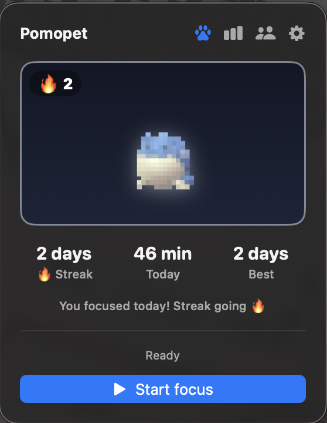
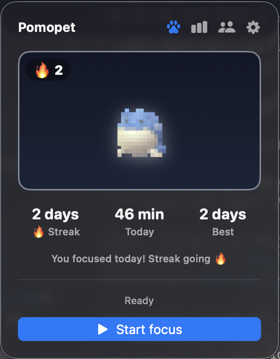
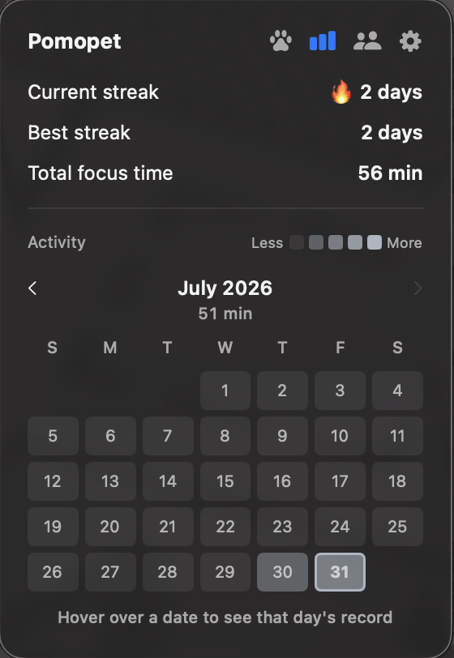
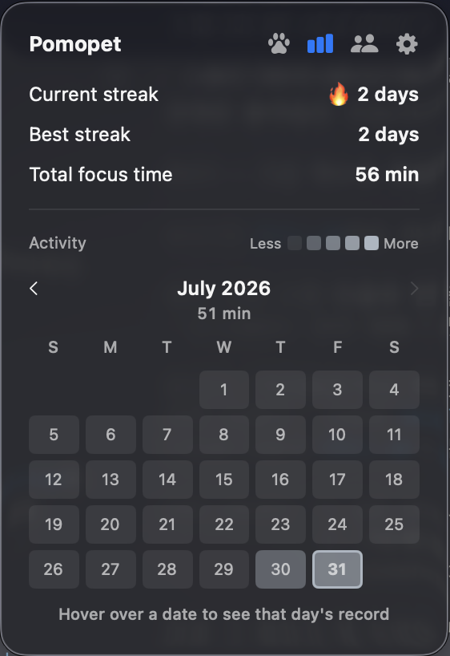
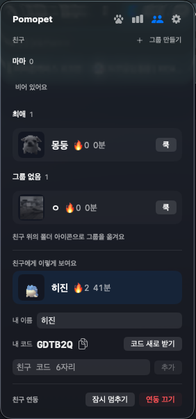
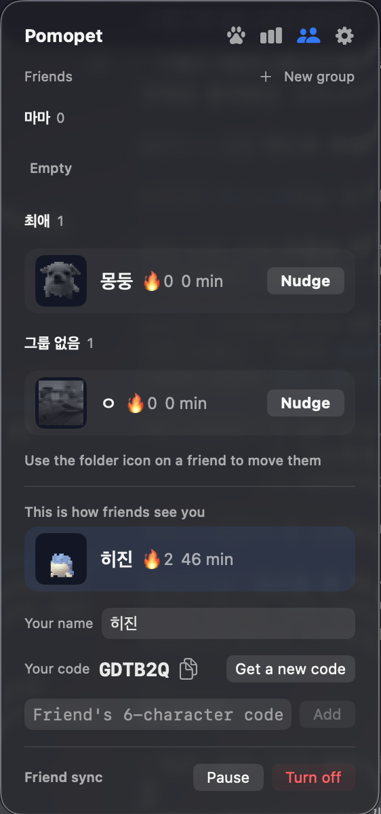
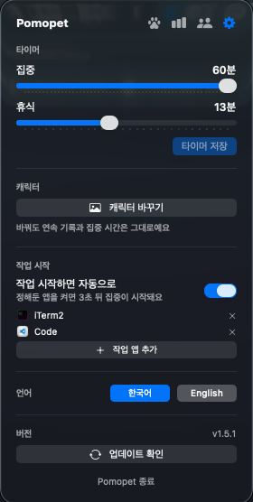
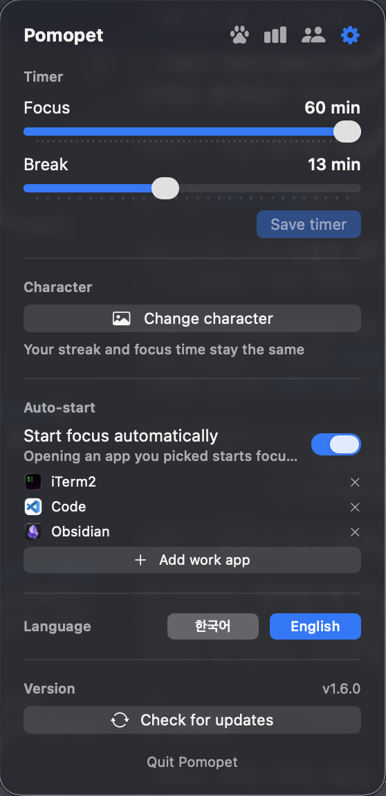

다른 펫 포모도로 앱은 준비된 고양이·강아지 중에서 고르게 합니다. Pomopet은 당신이 올린 이미지가 도트로 변환돼 그대로 펫이 됩니다. 오늘 집중하면 컬러로 깨어나고, 하루를 거르면 흑백으로 잠듭니다. Other pet pomodoro apps make you pick from their cats and dogs. Pomopet turns the image you upload into a pixel pet. Focus today and it wakes up in color; skip a day and it falls asleep in grayscale.
brew install --cask kes02/pomopet/pomopet
끌어다 놓아도 됩니다. 앱과 같은 26×26 도트로 변환하며,
브라우저 안에서만 처리되고 어디로도 전송되지 않습니다.
Drag & drop works too. Converted to the same 26×26 grid the app uses —
all in your browser, nothing is uploaded anywhere.
빌트인 고양이·강아지 중 고르는 게 아니라, 좋아하는 캐릭터를 직접 올려 도트로 키웁니다. 올리기 전에 도트와 메뉴바 크기로 미리 보여주고, 배경이 있는 사진은 배경을 자동으로 지웁니다. Not a menu of built-in cats and dogs — upload the character you actually like and raise it as pixel art. You see a preview at pixel and menu-bar size first, and photos with backgrounds can be cut out automatically.
"집중할 때 활성 / 쉴 때 잠듦"이 아닙니다. 오늘 한 번도 집중하지 않으면 캐릭터가 흑백으로 잠듭니다. 지키고 싶은 걸 잃지 않으려는 동기로 설계했습니다. Not "awake while focusing, asleep on break." If you don't focus at all today, your character sleeps in grayscale. Built around not losing something you care about.
결제도 계정도 구독도 없습니다. 앱과 친구 연동 서버 코드가 전부 공개돼 있고, 서버는 직접 띄워 쓸 수도 있습니다. No payment, no account, no subscription. The app and the friends server are both open, and you can self-host the server if you'd rather.
| Pomopet | 보통의 펫 포모도로 앱Typical pet pomodoro app | |
|---|---|---|
| 펫을 정하는 방식Choosing your pet | 내 이미지를 올려서Upload your own image | 준비된 종류 중 선택Pick from a built-in set |
| 하루를 걸렀을 때When you skip a day | 흑백으로 잠듦Sleeps in grayscale | 표정이 시무룩해짐Looks a bit sad |
| 가격Price | 무료Free | $4.99 – $9.99 |
| 코드Source | 공개 (MIT)Open (MIT) | 비공개Closed |
오늘 한 번도 집중하지 않으면 흑백으로 잠들어 있다가, 집중하면 컬러로 깨어나고 옆에 연속일이 붙습니다. 집중·휴식 중에는 남은 시간이 표시됩니다. Dock 아이콘은 없습니다. It sleeps in grayscale until you focus, then wakes up in color with your streak beside it. During a session it shows the time left. No Dock icon.








macOS 14 (Sonoma) 이상 · Apple Silicon과 Intel 모두 지원 macOS 14 (Sonoma) or later · Apple Silicon and Intel
brew install --cask kes02/pomopet/pomopetxattr -dr com.apple.quarantine /Applications/Pomopet.app차단 창에서 "휴지통으로 이동"을 누르지 마세요 — 앱이 삭제됩니다. "완료"를 누르고 위 명령을 실행하거나, 시스템 설정 → 개인정보 보호 및 보안 → "그래도 열기"를 누르면 됩니다. Apple 서명·공증이 없어 생기는 일이고 최초 1회만 필요합니다. Homebrew로 설치하면 이 과정 자체가 없습니다. Don't click "Move to Trash" in the block dialog — it deletes the app. Click "Done" and run the command above, or go to System Settings → Privacy & Security → "Open Anyway". This is only because the build isn't Apple-signed, and it's a one-time step. Installing via Homebrew skips it entirely.
친구 연동은 기본으로 꺼져 있고, 켜기 전에는 서버로 아무것도 보내지 않습니다. 켜면 익명 계정과 6자리 코드가 만들어집니다 — 이메일도 비밀번호도 소셜 로그인도 없습니다. 올라가는 건 오늘 집중 시간·세션 수·깨어났는지·연속일·26×26 펫 그림뿐이고, 시각별 기록과 어떤 앱을 켰는지는 올라가지 않습니다. 서버 코드도 함께 공개돼 있어 직접 띄워 쓸 수 있습니다. Friends are off by default, and nothing is sent until you turn them on. Turning them on creates an anonymous account with a 6-digit code — no email, no password, no social login. It syncs today's focus minutes, session count, awake state, streak, and a 26×26 pet image. It does not sync timestamps or which apps you opened. The server is open source too, so you can host it yourself.